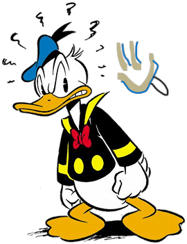

Hyperblog
Tu Blog de Cabecera
Este es el Título atractivo e Interesante del Post
Y este es el parrafo de inicio donde vamos a explicar las cosas increibles que se pueden hacer con ramas

Los Blogs son la mejor forma de compartir informacion y tus ideas. Mucho mas que ir a conferencias o salir en Youtube. Excepto si eres un rockstar. Pero estadisticamente no lo eres... por ahora.
Suscribete y dale Like